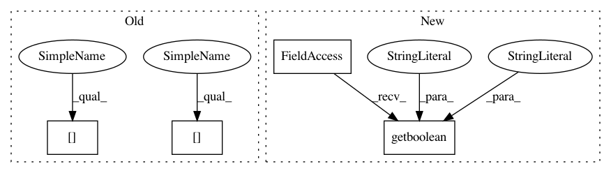

378f02bf9cd59fa2609ce3339be5885599ae1fac,mvpa/base/__init__.py,,,#,128
Before Change
if environ.has_key("MVPA_WARNINGS_BT"):
warnings_btlevels = int(environ["MVPA_WARNINGS_BT"])
warnings_bt = True
else:
warnings_btlevels = 10
warnings_bt = False
if environ.has_key("MVPA_WARNINGS_COUNT"):
warnings_maxcount = int(environ["MVPA_WARNINGS_COUNT"])
else:
warnings_maxcount = 1
warning = WarningLog(
handlers={
False: environ.get("MVPA_WARNING_OUTPUT", "stdout").split(","),
True: []}[environ.has_key("MVPA_NO_WARNINGS")],
btlevels=warnings_btlevels,
btdefault=warnings_bt,
maxcount=warnings_maxcount
)
if __debug__:
from mvpa.base.verbosity import DebugLogger
// NOTE: all calls to debug must be preconditioned with
// if __debug__:
debug = __Singleton("debug", DebugLogger(
handlers=environ.get("MVPA_DEBUG_OUTPUT", "stdout").split(",")))
// set some debugging matricses to report
// debug.registerMetric("vmem")
// List agreed sets for debug
debug.register("DBG", "Debug output itself")
debug.register("INIT", "Just sequence of inits")
debug.register("RANDOM", "Random number generation")
debug.register("EXT", "External dependencies")
debug.register("TEST", "Debug unittests")
debug.register("MODULE_IN_REPR", "Include module path in __repr__")
debug.register("ID_IN_REPR", "Include id in __repr__")
debug.register("DG", "Data generators")
debug.register("LAZY", "Miscelaneous "lazy" evaluations")
debug.register("LOOP", "Support"s loop construct")
debug.register("PLR", "PLR call")
debug.register("SLC", "Searchlight call")
debug.register("SA", "Sensitivity analyzers call")
debug.register("PSA", "Perturbation analyzer call")
debug.register("RFEC", "Recursive Feature Elimination call")
debug.register("RFEC_", "Recursive Feature Elimination call (verbose)")
debug.register("IFSC", "Incremental Feature Search call")
debug.register("DS", "*Dataset")
debug.register("DS_", "*Dataset (verbose)")
debug.register("DS_ID", "ID Datasets")
debug.register("DS_STATS","Datasets statistics")
// CHECKs
debug.register("CHECK_DS_SORTED", "Checking in datasets for sorted")
debug.register("CHECK_IDS_SORTED",
"Checking for ids being sorted in mappers")
debug.register("CHECK_RETRAIN", "Checking in retraining/retesting")
debug.register("COL", "Generic Collectable debugging")
debug.register("MAP", "*Mapper")
debug.register("MAP_", "*Mapper (verbose)")
debug.register("ST", "State")
debug.register("STV", "State Variable")
debug.register("COLR", "Collector for states and classifier parameters")
debug.register("CLF", "Base Classifiers")
debug.register("CLF_", "Base Classifiers (verbose)")
debug.register("CLF_TB",
"Report traceback in train/predict. Helps to resolve WTF calls it")
debug.register("CLFBST", "BoostClassifier")
debug.register("CLFBST_TB", "BoostClassifier traceback")
debug.register("CLFBIN", "BinaryClassifier")
debug.register("CLFMC", "MulticlassClassifier")
debug.register("CLFSPL", "SplitClassifier")
debug.register("CLFFS", "FeatureSelectionClassifier")
debug.register("CLFFS_", "FeatureSelectionClassifier (verbose)")
debug.register("FS", "FeatureSelections")
debug.register("FS_", "FeatureSelections (verbose)")
debug.register("FSPL", "FeatureSelectionPipeline")
debug.register("SVM", "SVM")
debug.register("SVM_", "SVM (verbose)")
debug.register("LIBSVM", "Internal libsvm output")
debug.register("SMLR", "SMLR")
debug.register("SMLR_", "SMLR verbose")
debug.register("GPR", "GPR")
debug.register("KERNEL", "Kernels module")
debug.register("SG", "PyMVPA SG wrapping")
debug.register("SG_", "PyMVPA SG wrapping verbose")
debug.register("SG__", "PyMVPA SG wrapping debug")
debug.register("SG_SVM", "Internal shogun debug output for SVM itself")
debug.register("SG_FEATURES", "Internal shogun debug output for features")
debug.register("SG_LABELS", "Internal shogun debug output for labels")
debug.register("SG_KERNELS", "Internal shogun debug output for kernels")
debug.register("SG_PROGRESS",
"Internal shogun progress bar during computation")
debug.register("IOH", "IO Helpers")
debug.register("CM", "Confusion matrix computation")
debug.register("CROSSC","Cross-validation call")
debug.register("CERR", "Various ClassifierErrors")
// Lets check if environment can tell us smth
if environ.has_key("MVPA_DEBUG"):
debug.setActiveFromString(environ["MVPA_DEBUG"])
// Lets check if environment can tell us smth
if environ.has_key("MVPA_DEBUG_METRICS"):
After Change
warning = WarningLog(
handlers={
False: cfg.get("warnings", "output", default="stdout").split(","),
True: []}[cfg.getboolean("warnings", "suppress", default="no")],
btlevels=warnings_btlevels,
btdefault=warnings_bt,
maxcount=warnings_maxcount
In pattern: SUPERPATTERN
Frequency: 3
Non-data size: 4
Instances
Project Name: PyMVPA/PyMVPA
Commit Name: 378f02bf9cd59fa2609ce3339be5885599ae1fac
Time: 2008-06-23
Author: michael.hanke@gmail.com
File Name: mvpa/base/__init__.py
Class Name:
Method Name:
Project Name: Shmuma/ptan
Commit Name: 7e649766d74cdc69427da361684c64accd59e579
Time: 2017-10-04
Author: max.lapan@gmail.com
File Name: samples/dqn_tweaks_atari.py
Class Name:
Method Name:
Project Name: PyMVPA/PyMVPA
Commit Name: 378f02bf9cd59fa2609ce3339be5885599ae1fac
Time: 2008-06-23
Author: michael.hanke@gmail.com
File Name: mvpa/base/__init__.py
Class Name:
Method Name:
Project Name: NeuromorphicProcessorProject/snn_toolbox
Commit Name: 71d61f102189f8b7337567ca34ad590f2ddf4808
Time: 2018-02-27
Author: bodo.rueckauer@gmail.com
File Name: snntoolbox/simulation/target_simulators/INI_ttfs_target_sim.py
Class Name: SNN
Method Name: simulate